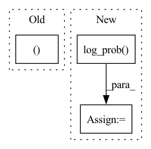

Pattern ID :36190

Before Change
zD = self.decode(z_)
out = torch.sigmoid(zD)
return out, kld
def bound(rce, x, kld, beta):
After Change
p = Normal(0., 1.)
// KLD including logdet term
p_z_ = torch.sum(p.log_prob(z_), -1)
q0_z_0 = torch.sum(q0.log_prob(z_0), -1)
log_det = log_det.view(-1)
kld = - torch.sum(p.log_prob(z_), -1) + torch.sum(q0.log_prob(z_0), -1) - log_det.view(-1)
In pattern: SUPERPATTERN
Frequency: 4
Non-data size: 3
Instances
Fragment ID: 102627516
Project Name: vincentstimper/normalizing-flows
Commit Name: bd001374eacad94bdea4150d2bfd1876d35d7523
Time: 2020-03-08
Author: 43236963+lukasryll@users.noreply.github.com
File Name: normflow/inf_network.py
M Class Name: FlowVAE
N Class Name: FlowVAE
M Method Name: forward(2)
N Method Name: forward(2)
M Parent Class: nn.Module
N Parent Class: nn.Module
M File Name: normflow/inf_network.py
N File Name: normflow/inf_network.py
M Start Line: 84
M End Line: 92
N Start Line: 73
N End Line: 95
'>
Before Change
return means
normal = self._normal(outputs)
action, log_prob = self._sample(normal)
return action, log_prob
def _normal(self, outputs):
After Change
// see openai spinningup for log_prob computation:
// https://github.com/openai/spinningup/blob/e76f3cc1dfbf94fe052a36082dbd724682f0e8fd/spinup/algos/pytorch/sac/core.py//L53
raw = normal.rsample()
log_prob = normal.log_prob(raw).sum(axis=-1)
log_prob -= (2*(np.log(2) - raw - F.softplus(-2*raw))).sum(axis=1)
action = squash_action(raw, self._tanh_scale, self._tanh_mean)
'>
Fragment ID: 102627518
Project Name: syuntoku14/pytorch-rl-il
Commit Name: c91d0a402f421895b01496527019685dcf62821f
Time: 2020-05-19
Author: syuntoku14@gmail.com
File Name: rlil/policies/soft_deterministic.py
M Class Name: SoftDeterministicPolicyNetwork
N Class Name: SoftDeterministicPolicyNetwork
M Method Name: forward(3)
N Method Name: forward(3)
M Parent Class: RLNetwork
N Parent Class: RLNetwork
M File Name: rlil/policies/soft_deterministic.py
N File Name: rlil/policies/soft_deterministic.py
M Start Line: 34
M End Line: 41
N Start Line: 37
N End Line: 56
'>
Before Change
latent_pi, latent_vf, latent_sde = self._get_latent(obs)
// Evaluate the values for the given observations
value = self.value_net(latent_vf)
action, action_distribution = self._get_action_dist_from_latent(latent_pi, latent_sde=latent_sde,
deterministic=deterministic)
log_prob = action_distribution.log_prob(action)
return action, value, log_prob
After Change
value = self.value_net(latent_vf)
distribution = self._get_action_dist_from_latent(latent_pi, latent_sde=latent_sde)
action = distribution.get_action(deterministic=deterministic)
log_prob = distribution.log_prob(action)
return action, value, log_prob
def _get_latent(self, obs: th.Tensor) -> Tuple[th.Tensor, th.Tensor, th.Tensor]:
'>
Fragment ID: 102627514
Project Name: dlr-rm/stable-baselines3
Commit Name: fdecd512dbeeb8f9009744c56a487c1ae794e637
Time: 2020-03-31
Author: antonin.raffin@ensta.org
File Name: torchy_baselines/ppo/policies.py
M Class Name: PPOPolicy
N Class Name: PPOPolicy
M Method Name: forward(3)
N Method Name: forward(3)
M Parent Class: BasePolicy
N Parent Class: BasePolicy
M File Name: torchy_baselines/ppo/policies.py
N File Name: torchy_baselines/ppo/policies.py
M Start Line: 159
M End Line: 161
N Start Line: 159
N End Line: 161
'>
Before Change
normal = torch.distributions.normal.Normal(0, 1)
_probs_per_marker = normal.log_prob(
(h[:, None, :] - model.module.rho_inferred[None, ...]) / model.module.std_diags
) - torch.log(model.module.std_diags)
df_probs = pd.DataFrame(
After Change
h = model.module.difference_to_modes(u)
_probs_per_marker = normal.log_prob(h)
df_probs = pd.DataFrame(
_probs_per_marker.mean(dim=0).detach().numpy(),
columns=model.adata.var_names,
'>
Fragment ID: 102627522
Project Name: mics-lab/scyan
Commit Name: 0609b5e7335be6d48aa4ce514be2efeb794fac04
Time: 2022-03-20
Author: quentin.blampey@student.ecp.fr
File Name: scyan/plot.py
M Class Name: AnonimousClass
N Class Name: AnonimousClass
M Method Name: probs_per_marker(4)
N Method Name: probs_per_marker(4)
M Parent Class:
N Parent Class:
M File Name: scyan/plot.py
N File Name: scyan/plot.py
M Start Line: 78
M End Line: 83
N Start Line: 79
N End Line: 84